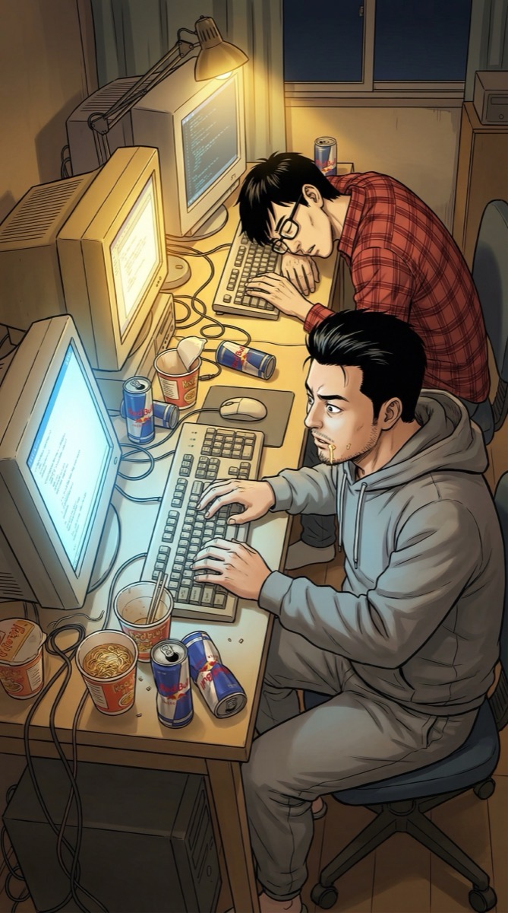
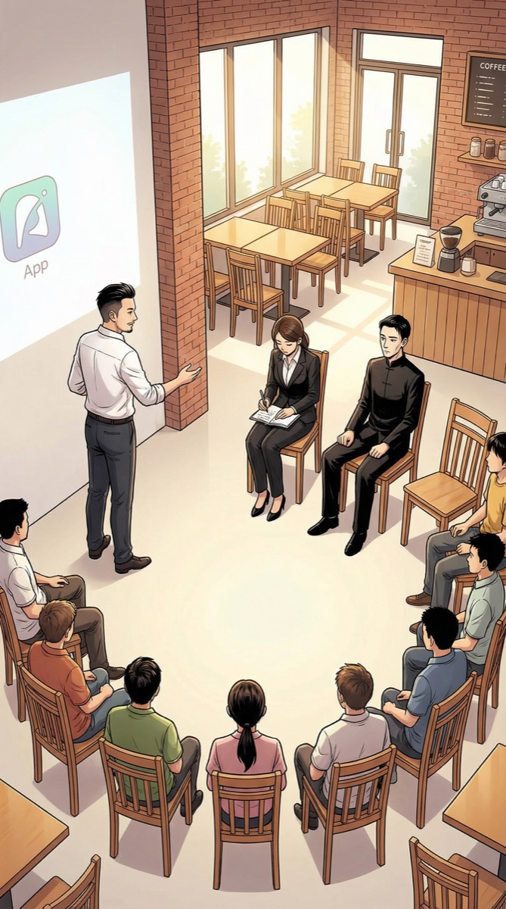
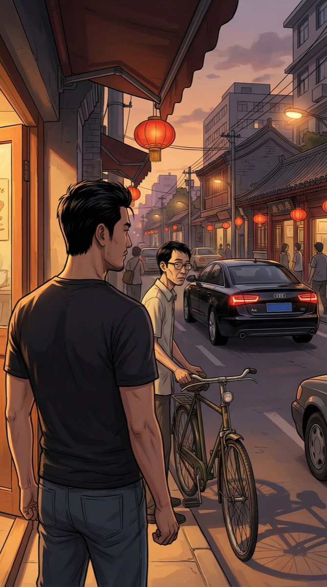
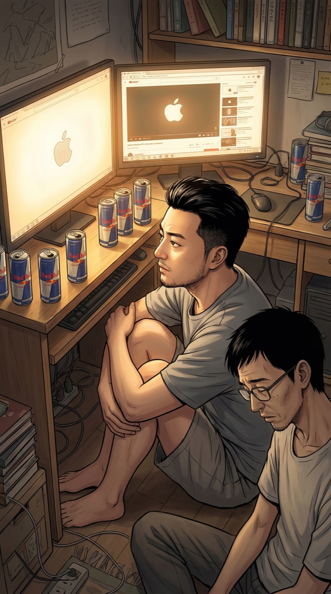
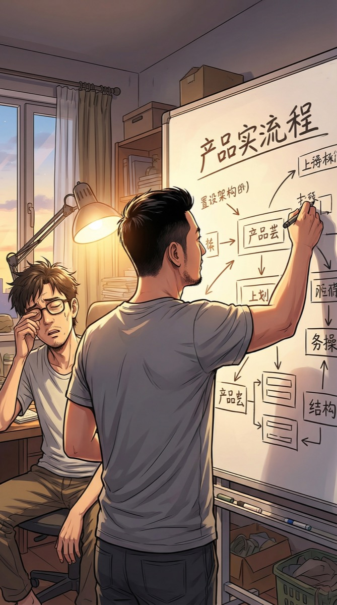
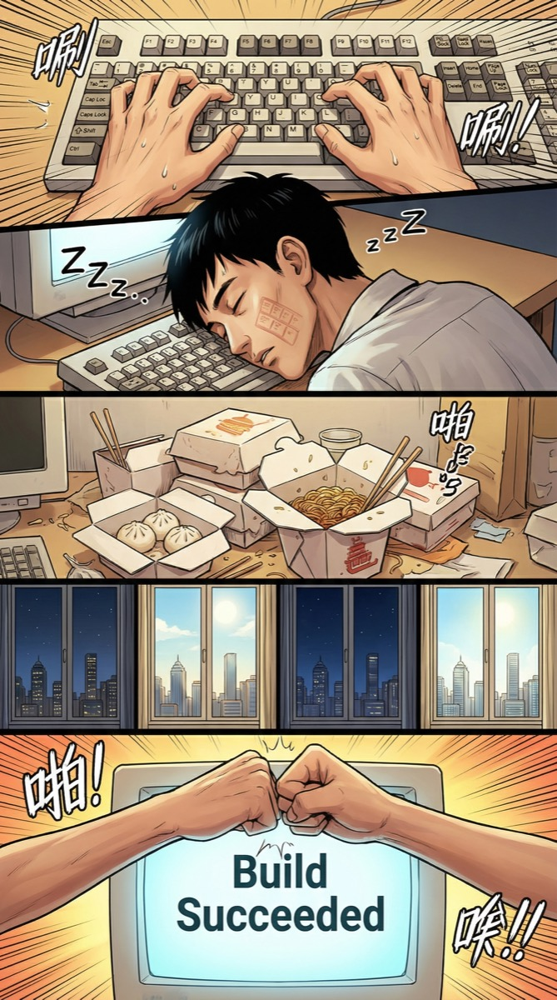
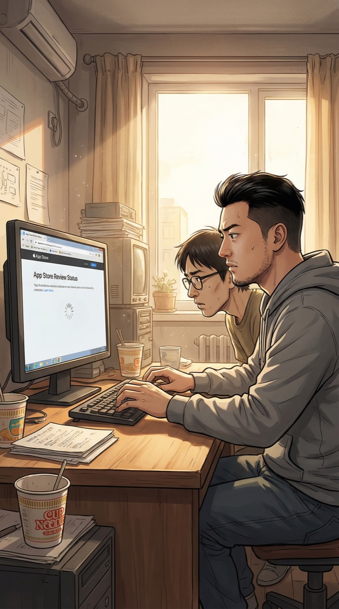
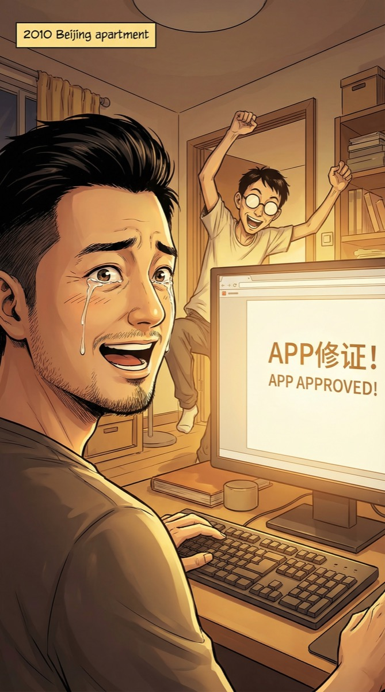
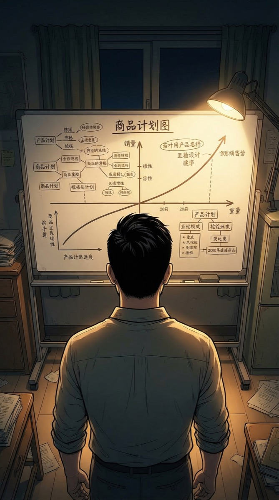

日历翻到了四月，我们的APP还在改第17版。知道答案和做出答案之间，隔着一万碗泡面。
出租屋的桌上堆满了方便面桶和红牛罐。两台破电脑屏幕发出蓝光。明辉已经趴在键盘上睡着了，我络腮胡上还沾着泡面汤。
2010年的手机内存只有256MB，我每个功能都要抠到字节级。上辈子我写代码从不看内存，这辈子我恨不得每个变量都优化三遍。
屏幕上是v0.17版本——一个移动社交+内容分享平台。界面简陋但功能完整。
再等两个月。等那个改变世界的长方形出来，我的戏才真正开始。
清晨的阳光透进出租屋。墙上日历的6月7日被红笔圈了起来——iPhone 4发布日。
我上辈子做过千万美金的产品，这辈子在大学食堂举牌拉用户。人生，是个圈。
大学食堂门口，我举着手写纸牌"下载APP送奶茶"。旁边一排奶茶。明辉蹲在后面调试手机。来往学生没人理。
"这什么APP啊？"
一个扎马尾的女生停下脚步，好奇地凑过来。双肩包上挂着人人网的钥匙扣。
"比人人网好玩的东西。你试试？"
"比人人网好玩？口气挺大的。"
她在APP里发了第一条内容："这个APP有点意思！奶茶也挺好喝的。😄"
下面显示"1个赞"——是明辉点的。
一个用户。上辈子我的第一个产品用了三个月才有1000个用户。这辈子，一杯奶茶搞定第一个。有些路确实更短了。

简陋的咖啡馆二楼，20多把椅子排成弧形。一面白墙当投影幕。这是2010年北京创业圈的Demo Day——寒酸但充满野心。
台下有个人让我心里咯噔了一下——不是张薇，是她旁边那个穿黑衣服的男人。我不认识他，但他的眼神让我想起上辈子遇到过的那种人——来抢赛道的。
"我们做的不是另一个人人网，是移动端的内容发现。用户走在路上，就能看到身边的人在分享什么、讨论什么。"
张薇举手："数据呢？用户多少？"
"327个。"
全场安静。
327个用户。其中200个是大学生，50个是我和明辉的测试账号，77个不知道从哪来的。我上辈子PPT里写"百万级用户"的时候从没脸红过，这辈子说327反而觉得踏实。
"有意思。我叫陈浩，刚从硅谷回来。我也在做移动社交。"
来了。我不认识这张脸，但我认识这种人——上辈子，把我从第一家公司挤出去的，就是这种人。

明辉："那人谁啊？看着挺牛的。"
"一个以后会让我们很头疼的人。走吧，回去写代码。"
明辉看着陈浩上了黑色奥迪A6："他开奥迪，我们骑自行车……差距有多大？"
"三年。三年后他会来求我们合并。"

2010年6月7日，乔布斯那个穿黑色高领毛衣的男人，即将拿出改变世界的东西。全世界不知道接下来会发生什么——除了我。
凌晨两点，出租屋只有屏幕的光。明辉强撑着不让自己睡着。桌上一排空红牛。
Retina显示屏。A4芯片。陀螺仪。这些参数我16年后倒背如流，但亲眼再看一遍发布会——还是起鸡皮疙瘩。这个长方形，即将养活千万开发者，包括我。

"起来！干活！"
明辉："现在？？发布会才刚结束啊！"
"全中国有100个团队在做同样的事。我们只有速度这一个优势。3天，必须3天。"
明辉看了看手机——"凌晨4点17分……上辈子你是不是当过特种兵？"
我差点笑出来——"差不多。"

三天。72小时。418次编译。37个Bug。最后一个Bug是明辉写的，他死不承认。我们吵了十分钟，然后一起在地板上睡着了。

这一刻比上辈子等公司上市敲钟还紧张。因为我知道这个APP如果通过审核，意味着什么——我重生后的第一个真正的产品，将出现在全世界的iPhone上。

"上了！！！"
明辉："啊啊啊啊！我们的APP在App Store上了！！！"
上辈子第一个产品上线，我发了朋友圈。这辈子……2010年没有朋友圈。我给我妈发了条短信："妈，儿子的软件上线了。"
明辉："快看下载量！" 我刷新——"……3个。"
"……其中两个是我们自己下的吧？"
"嗯。第三个可能是审核员没删。"
App Store社交分类第23名——一个叫"WeLink"的APP。描述写着"基于地理位置的移动社交"。开发者：陈浩。
意料之中。但比我预想的快了两周。陈浩不只是说说而已——他的产品已经上架了，而且排名比我们高。
好戏开始了。
张薇："说实话，陈浩的团队更强。三个硅谷回来的工程师，融了300万美金。你呢？两个人，还住在出租屋里。"
"他做的是2010年的产品。我做的是2015年的产品——只是暂时用2010年的壳装着。"
张薇："我可以追投200万。但条件是——你必须在三个月内DAU过万。做不到，钱收回来。"

上辈子的教训：跟对手比功能，永远是消耗战。真正的赢法是——换一个赛道，让他追都追不上。
2010年没人理解"内容推荐"四个字，但五年后，一个叫张一鸣的人会证明我是对的。
白板上画了两条线——陈浩的"社交"是直线，我的"社交+内容"先平后飞。
47个用户。陈浩有3000个。张薇要三个月过万。明辉累得已经连续两天睡在地板上。钱只够再撑四个月。
但我笑了。因为我知道一件陈浩不知道的事——他押错了方向。而时间，站在我这边。
❓ 朱江的"内容+社交"策略能否跑赢陈浩的"纯社交"？
❓ 三个月DAU过万的对赌——如何完成？
又一个改变游戏规则的人入场了。
第三章 · 即将开启